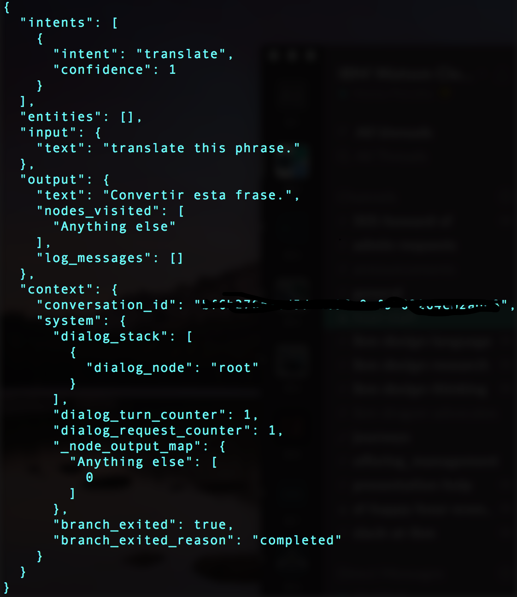

I’ve had a lot of trouble tackling this problem in the past when I wanted to create chatbots with Watson Conversation. I’ve also read countless posts that didn’t explain it to the level where I felt comfortable doing this on my own. Let me try to bridge that gap. In this post, i’ll use Node.js to show you how to create an instance of the Watson Conversation API using a REST call, and then call another API before returning a response to the user! Nice! The code can be found on Github. Also, I will use NPM (Node Package Manager), so you will need to install it if you do not have it.
Getting Started
1) Create Watson Conversation service in Bluemix.
2) Click on your Conversation Service in Bluemix, then click ‘Launch tool’ to get to the Watson Conversation interface.
3) Create a new workspace and inside this workspace create an intent called ‘translate’.
4) Add ‘translate this phrase.’ as a user example for this intent.
5) Go back to your main page for your workspace, click on the three dots and then click ‘view details’ and copy your Workspace ID to have handy for later.
Code
In my code, I will set up a simple server to run on port 8081(not shown below for simplicity), and then create an instance of the Watson Conversation API. You will need your own username and password from your Bluemix credentials page.
I then call the message API (you need to input your workspace id from above),
and pass in a phrase that will trigger our ‘translate’ intent. Then, in our callback
function, we check to make sure Watson has identified the correct intent, and then call our translate function(which
will call our external API). Your translate function can be different than mine - that is where you will do your
external call to the API. After our external API returns, we simply set the output text to be the response of our
API call.
That’s pretty much all there is to it. Also, here is the translate function, which will call the Watson Translation
API and translate the phrase from our user. You will need service credentials for this call as you did for the
Conversation API. I return a promise to make sure that only after the external API finished, the Conversation will
return the response to the user. Otherwise, we might get errors.
Results
Our console should look something like this if everything went smoothly. 
Once again, if you want to see the full code (creating server and all), please check out my Github repo. And of course, if this helped you at all please star it ;)
Conclusion
Watson Conversation is an extremely powerful service that can be used to call external APIs with moderate ease. If you need more help, please also check out the official API docs.